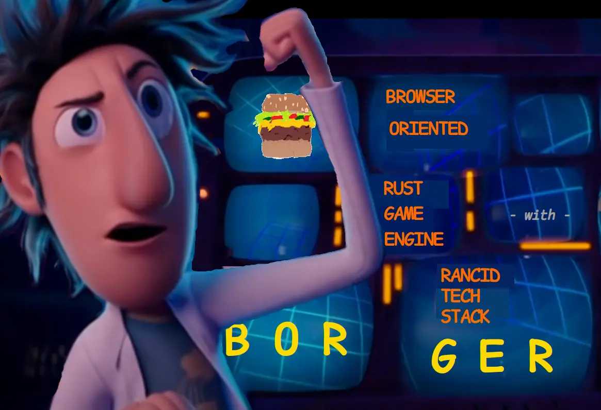
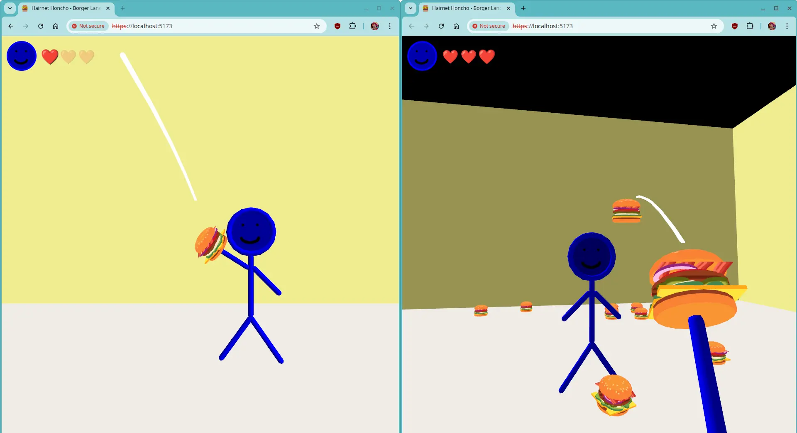
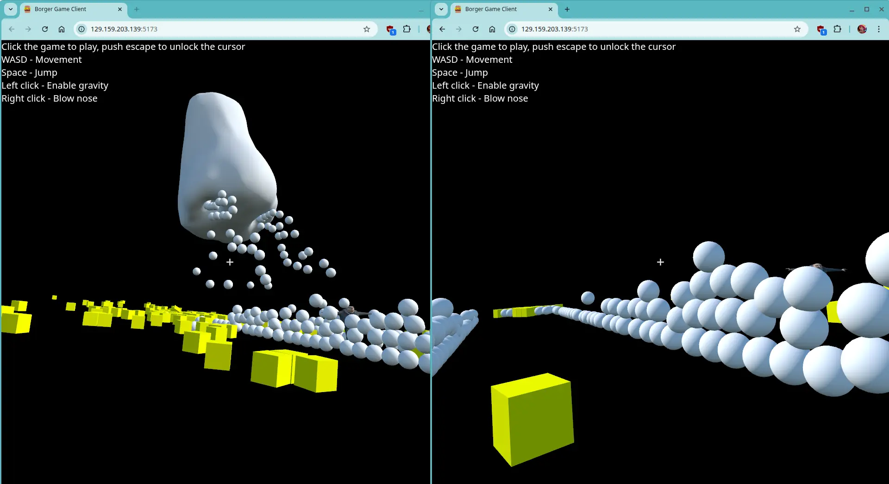
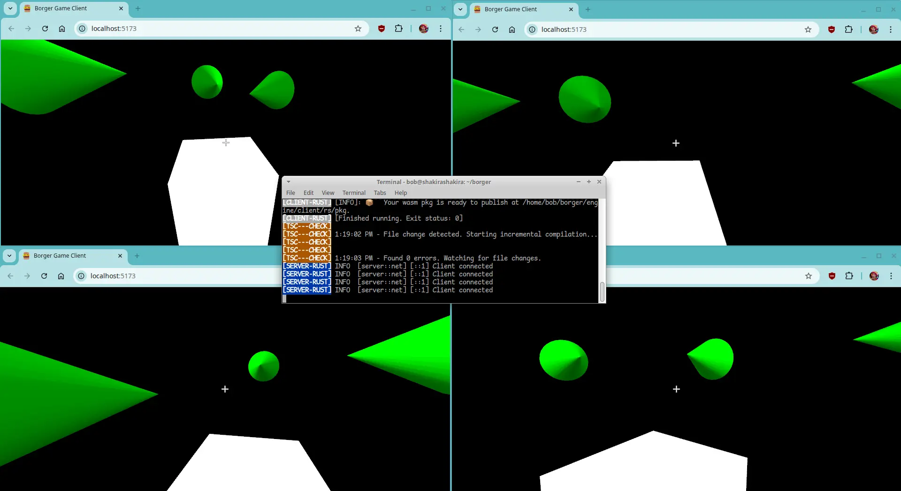

Take a bite:
curl -fsSL https://eat.borger.dev | bash

Borger is a particularly delicious Rust-based multiplayer framework that makes it quick and easy to build cheat-proof, realtime, multiplayer browser games. It works by replacing yucky brain-hurting netcode with annotations that distill the hard parts away into a single question: “does this game mechanic need to be responsive or correct?” Inspired by Rust’s famed memory safety, Borger aims to introduce multiplayer safety by preventing many classes of vulnerabilities and bugs associated with multiplayer game development at compile time.
- Never ever netcode ever: Just write deceivingly simple game logic. Get server authority, client prediction, rollback, and reconciliation for free.
- Bring your own renderer: Borger is served fresh in the form of a scaffolded Vite project, allowing interoperability with your favorite hot-reloading tools: React, Three.js, or any other combo of renderers.
- Unified codebase: The same exact code produces both an efficient server executable and a client WebAssembly module.
- Vibe code friendly: Borger’s API surface is modeled after what LLM’s (and humans) excel at the most: declarative, composable, and delightfully puny.
- Deploy whenever, wherever: Being browser-first isn’t a limitation; it’s the lowest common denominator that all players can run. Wrap that Borger up in Electron and deliver it through any app store.
The bodacious gambit: a macro called
multiplayer_tradeoff!()
-
Need an immediate response without waiting for the server? Use
Immediatefor client prediction. -
Need to hide sensitive, private data from prying clients? Use
WaitForServerfor peace of mind. -
Need guaranteed correctness at all costs? Use
WaitForConsensusfor server authority. - That’s all there is to it!
Try it Out
curl -fsSL https://eat.borger.dev | bash
How it works
- Describe the fabric of your reality in a rich JSON schema. The shape of your game state data is used to autogenerate rollback machinery.
characters: {
netVisibility: "public",
presentation: "clone",
type: "SlotMap",
typeName: "Character",
content: {
pos: { netVisibility: "public", presentation: "interpolate", type: "Vec3" },
},
},
- Decree in beginner Rust the laws that govern your digital realm. Simulation logic is written with simple C-like setters and getters.
fn main() {
fn apply_input(
character: &mut Character,
input: &Input,
diff: &mut DiffSerializer<Immediate>,
) {
let mut pos = character.get_pos();
pos += input.omnidir * SPEED * TickInfo::SIM_DT;
character.set_pos(pos, diff);
}
- Engrave into the screen itself an audiovisual imagining of your dominion. Presentation logic written in typescript determines how the game looks, sounds, and feels.
for (const [id, character] of characters) {
const mesh = scene.getObjectByName(`character${id}`)!;
if (localCharacterID === id) {
mesh.visible = false;
camera.position.copy(character.pos);
camera.quaternion.copy(character.rot);
} else {
mesh.visible = true;
mesh.position.copy(character.pos);
mesh.quaternion.copy(character.rot);
}
}
Gallery


